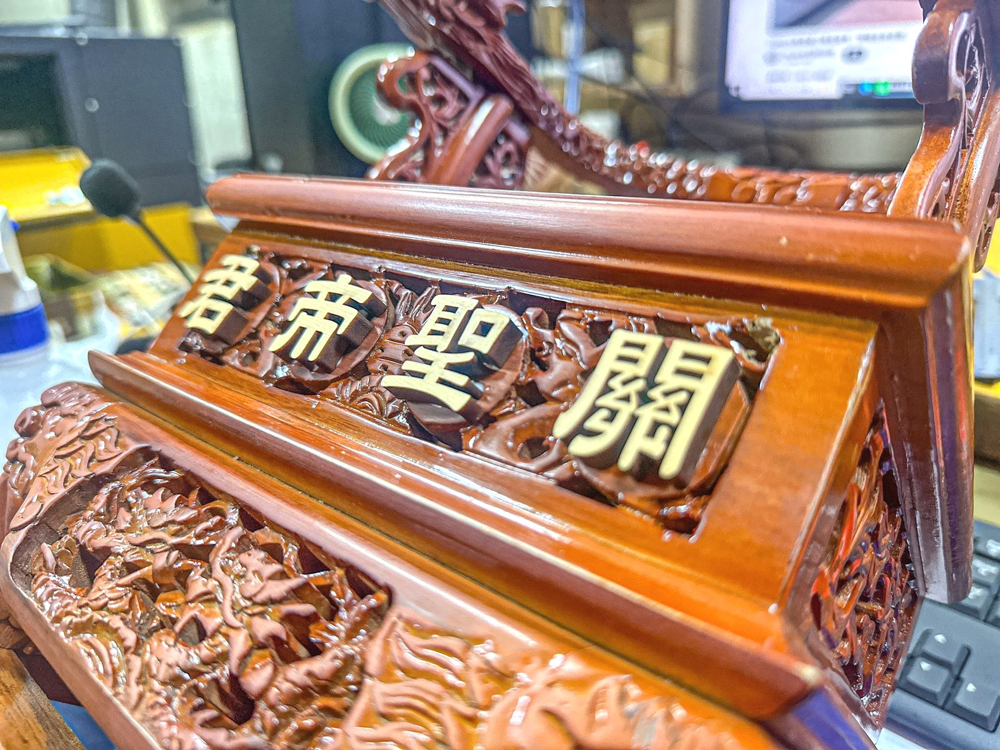
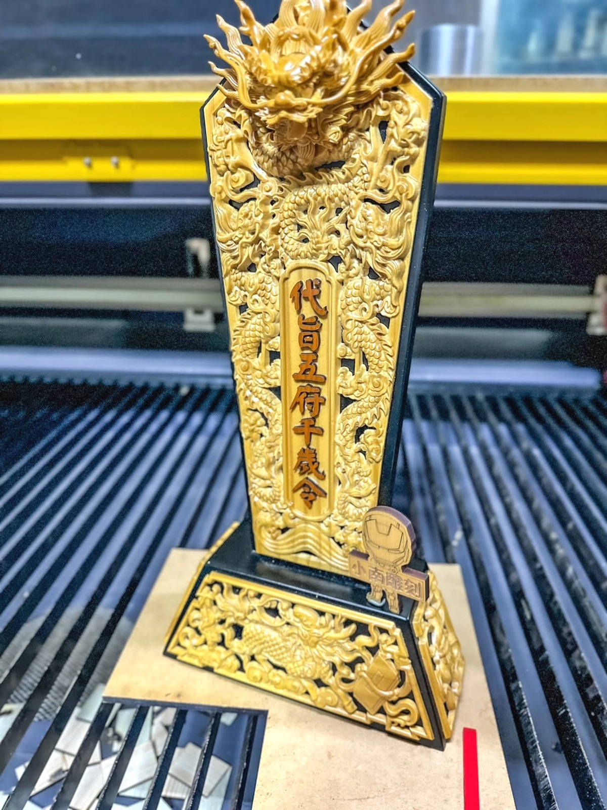
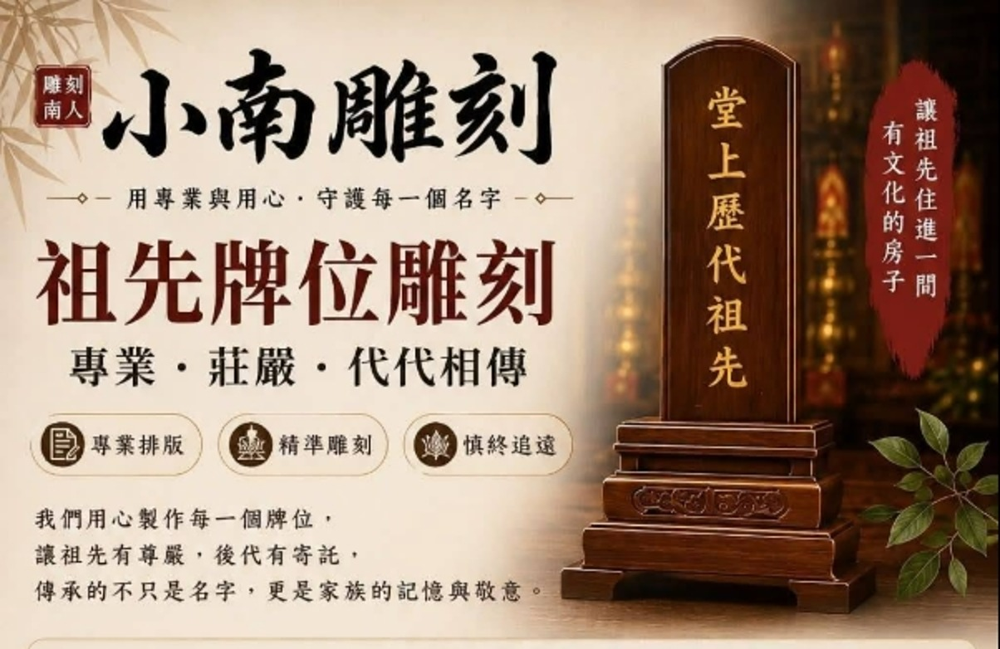
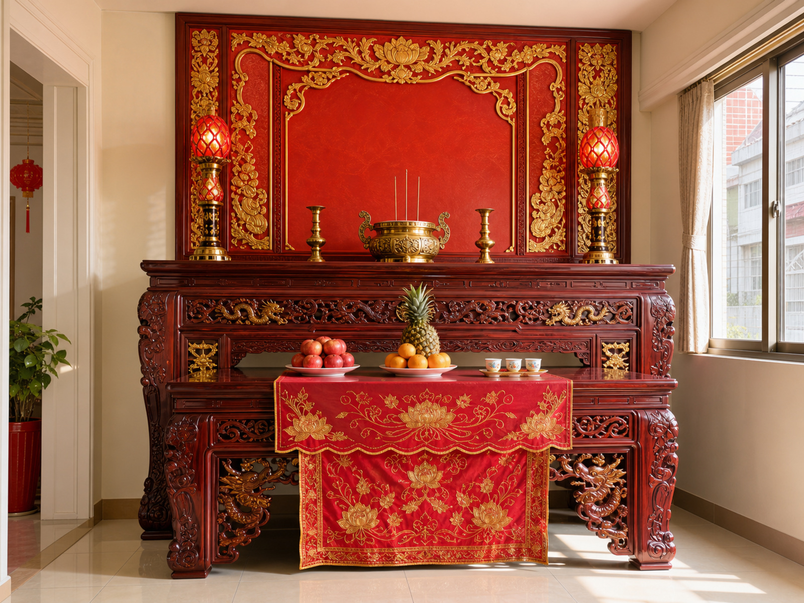
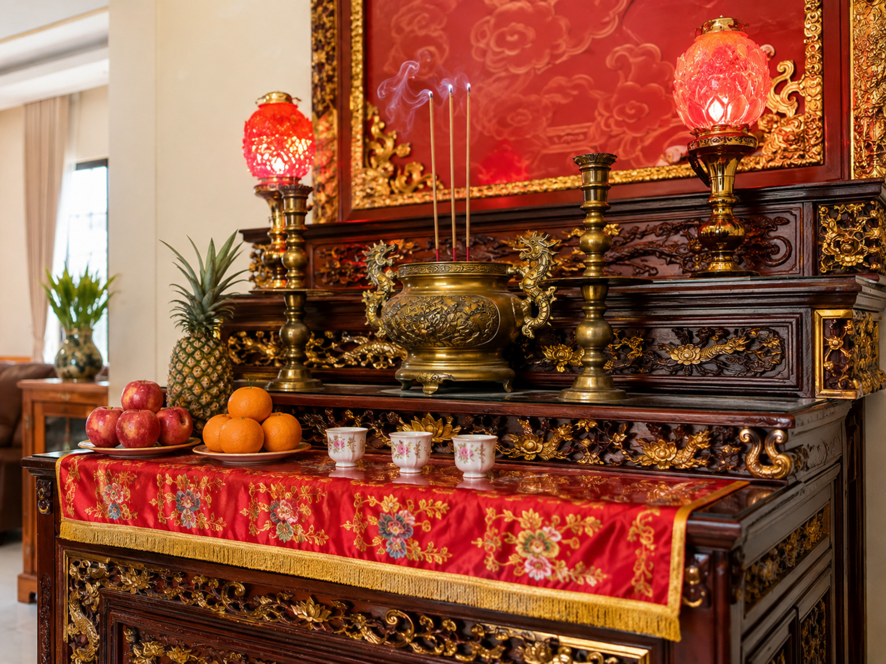
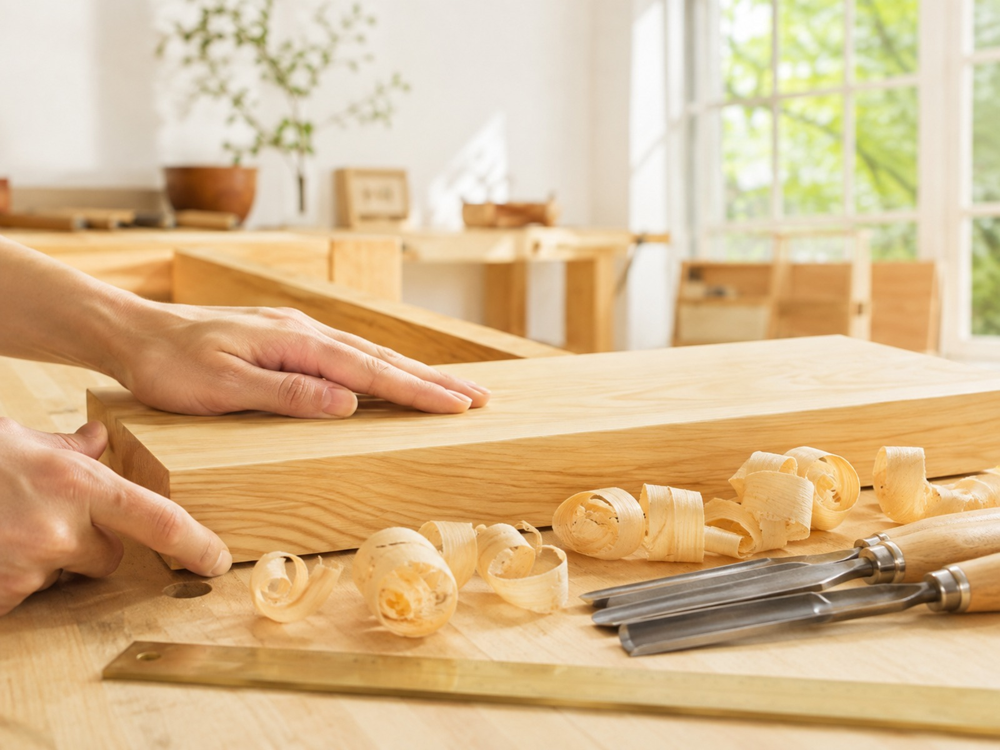
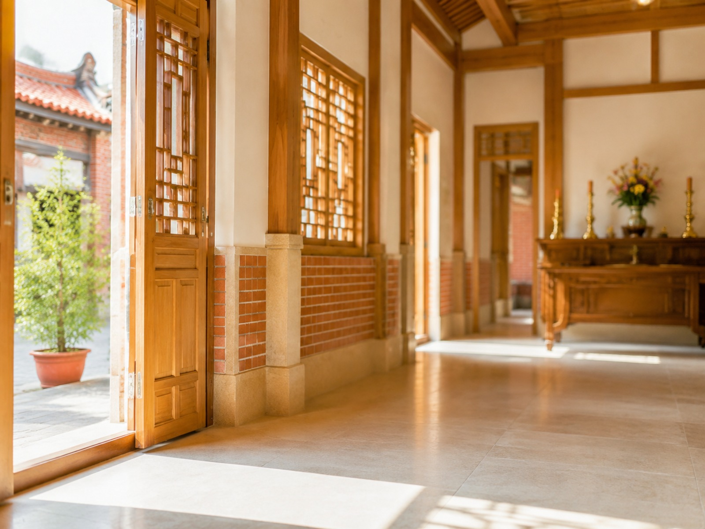

不只把字刻上去，
先把資料整理對
姓名、稱謂、輩分、生卒、堂號、籍貫——一面牌位是一份縮小的家譜。字序錯了，後代就認錯了自己的家。所以雕刻之前，先做的是校對。
龍益不是一間新開的店。它從永康六甲頂的一間佛具行開始，跟著台南人的婚喪喜慶、入厝安座、慎終追遠一路走過來。邱南寅接下的不只是招牌，而是一整條被信任著的關係。


父親邱崑益從佛具、金紙與祭祀用品做起，店名裡的「益」字，就是他自己的名字。老主顧從那時候跟到現在——北區華德里的里長一家，就是從六甲頂時期開始往來的。
同年，家族在永康與安南陸續設立龍益佛具企業社與龍益行，以宗教及宗教用品零售為本業，把口碑生意變成一間有登記、有制度的店。
業務從零售擴到神桌、祭祀用品的批發與製造，經營規模與品項一路長大，落腳台南市安南區北安路二段 612 號至今。
中信科技大學畢業的他，把在校所學的企業管理帶回傳統產業：建立資料整理、字體排版、雕刻製作到成品確認的完整流程，讓一件件靠師傅記憶完成的事，變成可以被複製、被交接、被查核的制度。
服務範圍遍及台南及周邊縣市；外縣市也能以拍照建檔的方式遠距完成。父親守住的是信任，兒子加上的是讓信任可以留存的技術。
先相信，後看見。邱南寅・個人主頁上的一句話
付出者收穫。
「我們做的，不只是神主牌，而是幫助一個家族，把祖先的名字好好安放。從混亂到清楚，從不確定到安心。」——這是他寫在自家粉專上的話，也是龍益現在的做事準則。
姓名、稱謂、輩分、生卒、堂號、籍貫——一面牌位是一份縮小的家譜。字序錯了，後代就認錯了自己的家。所以雕刻之前，先做的是校對。
舊牌褪色、受潮模糊時，最重要的不是趕快重刻，而是先把原始資料留下來。看不清楚的部分寧可查、寧可等，也不臆測。
毛筆墨跡撐不過數十年的潮濕與香火，雷射雕刻可以。完工後同時提供電子檔與紙本備存，下一代要再整理時，不必從頭猜起。

「一筆一畫，是敬意；一刀一刻，是傳承。
每一個名字，都值得被清楚看見。」
這是小南雕刻對外說明服務時，寫在第一行的話。專業排版、精準雕刻、慎終追遠——三件事的順序不能顛倒，因為前面錯了，後面刻得再漂亮也沒有意義。
龍益行是台南在地的佛具店、金紙店與宗教百貨；小南雕刻則專責神主牌與祖先牌位的資料整理與雷射雕刻。一邊是日常的敬拜，一邊是一輩子可能只做一次、卻絕不能做錯的事。



「神主牌保存的不只是名字，
而是一個家族的文化、一代又一代的記憶。」
父親那一代用手工雕刻與記憶做事；到了他這一代，多了機台、電腦與檔案。變的是工具，沒變的是——每一筆都要對得起這個家。
從第五屆的會員委員會一路做到主席、再到帶著一群人籌組新分會，他的商務履歷不是頭銜的累積，而是每一屆都有人願意再把事情交給他。
BNI 大台南市區・真鑽分會（我們重承諾）
從咖啡會議、參訪典範分會，一步步把一群有想法的人凝聚成團隊，2026 年 3 月正式啟動籌備會。分會的核心不是做生意，而是用系統與團隊合作，幫企業把不穩定的客源變成可預測的成長。
2026 年 8 月 獲頒 BNI 金質獎章
台南市朝日行善會 副總顧問／台南市南瀛獅子會 會員／台南市大勢至菩薩正信協會 監事／成博國際有限公司 負責人。
此外亦持續參與學甲中洲邱氏宗親會的祭祖與文化事務——回鄉掛上紅彩球那天他寫下：家的力量不在於誰最強，而在於彼此撐著往上。

在沒有照片的年代，
名字就是一個人存在的證明。
所以他把每一次雕刻都當成一次建檔：先問清楚這個家族從哪裡來，再決定木頭上該留下什麼。台南不只是旅行的城市，是一座用歲月讓人著迷的活歷史——他這樣說自己的家鄉。
家中牌位是否已經模糊？尺寸怎麼量？舊板能不能留？拍下正反面與內板尺寸傳給小南，先做初步確認，再談後面的事。